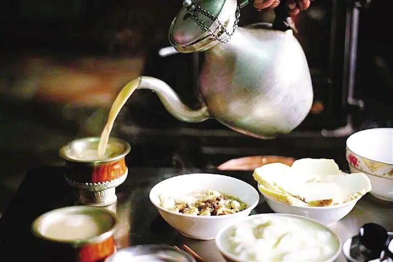
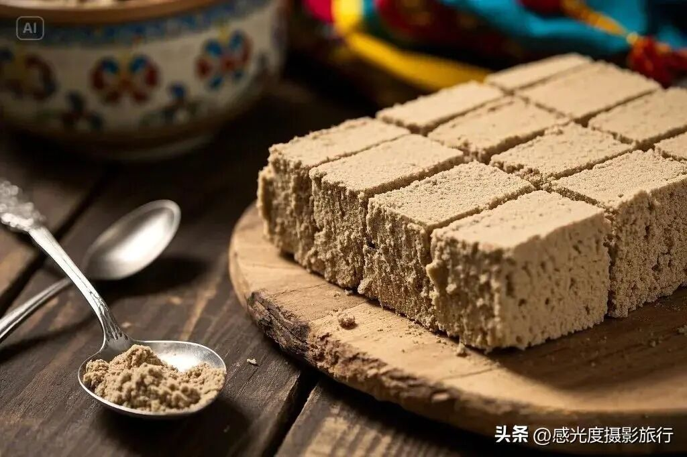
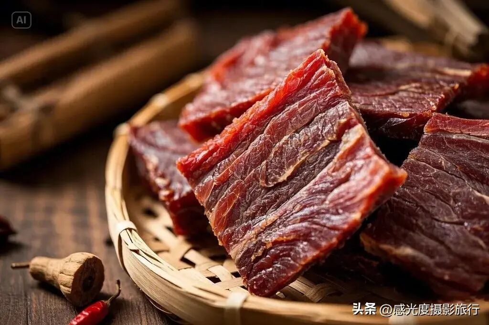
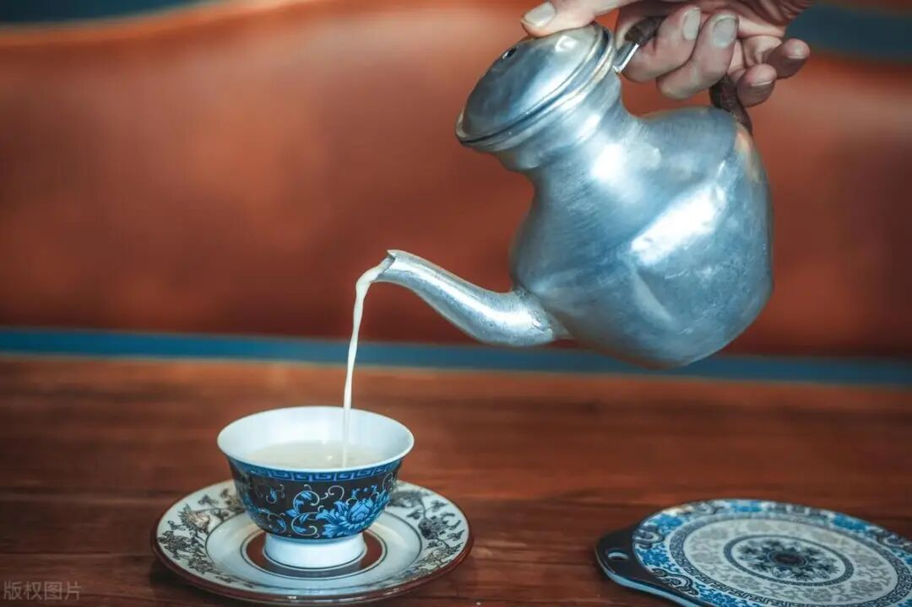
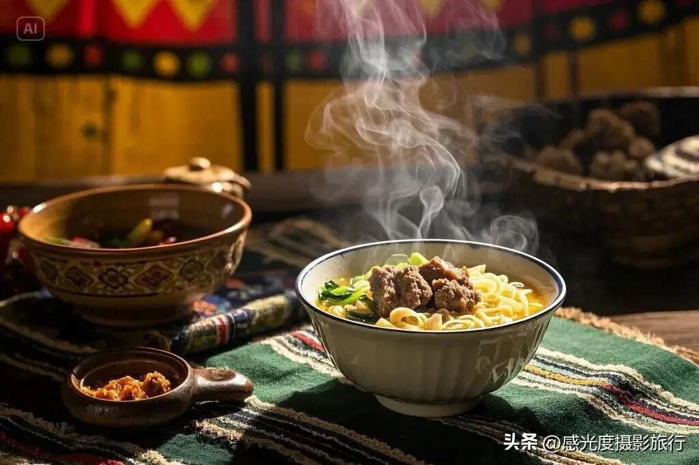

西藏，这片神秘的高原净土，不仅有壮美的雪山圣湖，更孕育了独具特色的饮食文化。受高寒缺氧的地理环境和藏传佛教文化影响，西藏饮食以青稞、牦牛、酥油为核心，口味偏咸、油、香，讲究高能量、高热量，是高原人民千百年来的生存智慧结晶。
本文整理了西藏最经典、最具代表性的十大美食，并附上各地市招牌美食推荐和实用避坑指南，一篇在手，吃遍西藏不踩雷。
西藏十大经典美食

1. 酥油茶 —— 藏地灵魂饮品
酥油茶（藏语称"恰苏玛"）是流行于西藏、青海、四川等藏区的传统饮品，以酥油、砖茶、食盐为主要原料。制作时将牦牛或羊奶提炼的酥油与熬煮的浓茶混合，经木桶反复抽打或电动搅拌形成乳状液体。成品咸香醇厚，富含蛋白质、脂肪及鞣酸，具有御寒保暖、缓解高原反应、助消化等功效，常与糌粑同食补充体力。
关于酥油茶的起源，相传由文成公主入藏后茶奶混合饮用演变而来。饮用时有独特礼仪：客人需用无名指弹洒三次敬神，主人边添边饮，茶碗常满，饮毕留底以示礼节。作为藏族生活必需品，酥油茶贯穿节庆、祭祀及婚俗，是高原民族生存智慧的体现。
2. 糌粑 —— 藏族核心主食

糌粑（zān ba）是藏族牧民传统主食，藏语意为"炒面"。以青稞为主要原料，经晒干、炒熟、磨粉制成。青稞在青藏高原已有3500年种植历史，其中黑青稞糌粑因富含膳食纤维及多种氨基酸而营养价值更高。食用时搭配酥油茶、奶渣或白糖，用手搅拌捏成团，饱腹感极强，便携耐储，是牧民和高原出行必备。
糌粑不仅获国家地理标志认证，还被制成压缩饼干、啤酒等深加工产品。在藏族文化中，糌粑用于新年祈福、待客礼仪及民俗活动，常以雕花木盒或皮袋盛装，是藏族饮食文化的根基。
3. 风干牦牛肉 —— 游牧便携能量源

风干牦牛肉是以牦牛后腿肉为原料的藏族传统肉制品。该技艺在藏族游牧社群中传承逾千年，2018年麦洼牦牛肉干工艺列入阿坝州非物质文化遗产名录。选用3-6岁牦牛后腿精肉，剔除筋膜后切成长条状，用盐与高原花椒腌制12小时，经烘干脱水后在高原寒风下自然风干20-30天，3.5斤鲜肉仅出1斤肉干。
成品肉质紧实纹理清晰，蛋白质含量高达48.3g/100g，铁元素含量为普通牛肉干的1.7倍，含18种氨基酸。口感兼具酥松与韧劲，咸鲜味中透出花椒清香，可直接手撕食用，也配青稞酒解腻，是现代健身补给的天然选择。
4. 藏式甜茶 —— 拉萨茶馆标配

藏式甜茶以红茶、牛奶、白糖为原料，经熬煮、搅拌等工艺制成，受印度、尼泊尔及英殖民文化影响形成，现以拉萨甜茶最具代表性。制作时需用纱布过滤茶渣，分次熬煮茶汤后混合乳制品与糖，二次煮沸，成品呈浅咖啡色，奶香茶香交融，口感顺滑香甜。
相比酥油茶的咸香，甜茶更易被游客接受。在拉萨，甜茶馆是重要的社交场所，当地人常配藏面、肉饼组成经典早餐搭配。2025年实施的加工标准规范了原料配比与保质要求，推动传统工艺产业化发展。
5. 藏面 —— 拉萨人的日常早餐

藏面（藏语"补突"）是西藏传统面食，兼具正餐与小吃的双重属性。面条以高原小麦粉为主料，因高海拔环境限制，需经煮熟晾干后再次烫热，形成略带夹生的独特口感。精髓在于以牦牛骨熬制的清汤，仅用盐调味，佐以牛肉丁、葱花提鲜，搭配酸萝卜与藏式辣酱，汤底醇厚、面芯偏硬，口感层次丰富。
在拉萨街头茶馆，藏面、甜茶与肉饼是经典早餐三件套，承载着传统与现代饮食文化的交融。
6. 牦牛酸奶 —— 高原营养圣品
牦牛酸奶以纯牦牛奶自然发酵制成，成品呈现双层结构特征：表层凝结金黄色奶油脂膜，内部保持洁白如雪的软嫩质地。酸度极高，需加糖或蜂蜜，质地浓稠赛过冰淇淋。富含益生菌与钙质，具有促进消化、增强免疫力等保健功能。
在藏族文化中，牦牛酸奶既是日常饮食又是节庆祭祀的重要组成部分。常见吃法是加入白糖、蜂蜜、人参果或炒青稞，酸甜交融，营养丰富。
7. 朋必 —— 日喀则招牌小吃
朋必是藏语音译，是一种用豌豆面制作而成的特色小吃。制作时先用大口径锅将豌豆熬汁，待豌豆汁熬成糊状后，添加藏葱、盐巴和咖喱粉等调料调和，撇掉上层油脂，室温下自然放凉至果冻状。成品呈金黄色，带着浓郁的豌豆清甜香气，浇上现磨的辣椒汁，口感爽滑、香辣开胃。
朋必被中国烹饪协会评选为西藏之"中国地域十大名小吃"，在日喀则街头巷尾随处可见，是极具后藏风情的平民美食。
8. 鲁朗石锅鸡 —— 林芝必尝珍馐
鲁朗石锅鸡以手掌参、藏香鸡为主料，配以松茸、枸杞等高原菌菇药材炖制。其核心烹饪器具为墨脱皂石手工凿制的石锅，由门巴族匠人制作，富含锌铁等矿物元素，保温性极强。主料选用生长周期约130天的高原藏鸡，经高压锅预处理后，与手掌参、天麻等药材在石锅中熬煮1-3小时，汤鲜味醇、鸡肉细嫩，兼具药香与鲜香的独特风味。
2022年实施的《林芝鲁朗石锅鸡》地方标准规范了鸡种选育、加工规格及分量标准。截至2024年，鲁朗镇聚集28家石锅鸡商户，成为西藏旅游文化符号。
9. 烤藏香猪 —— 林芝农家招牌
烤藏香猪使用高原特有的藏香猪作为原料。这些猪生长在海拔3000米至4000米的山林中，主要以野生牧草和原生态的玉米、青稞等为食，成长周期长且环境纯净，肉质独特。制作时将猪肉切成均匀小块，加入调料腌制数小时，然后在炭火上慢慢烤制，不断翻面，直到皮脆肉嫩、脂肪醇香透明。
最佳享用方式是将烤好的肉放在特制薄饼中，配以特制酱料，口感与味道完美结合，是林芝农家乐的招牌菜。
10. 青稞酒 —— 节庆必备佳酿
青稞酒是藏区节庆必备低度酒，以青稞发酵酿造，分甜酒和烈型。酒精度低、口感清甜，敬酒有"三口一杯"的传统礼仪——客人先用无名指蘸酒弹洒三次（敬天、敬地、敬友），然后喝一口，主人斟满，再喝一口，再斟满，第三口一饮而尽。青稞酒不仅是饮品，更是藏族待客之道的文化载体。
西藏各地市招牌美食推荐
西藏地域辽阔，每个地市都有其标志性美食。以下是按地区整理的精华推荐：
拉萨 —— 甜茶馆文化中心
- 藏面 + 甜茶/酥油茶 + 酸萝卜：老城早餐标配，体验最地道的拉萨生活
- 藏式血肠（玛莎玛局）：羊血+碎肉+糌粑灌羊肠煮熟，节庆必吃，脂香混青稞香
- 炸灌肺：羊肺灌酥油、面粉等煮后油炸，外脆里软，藏餐宴席传统菜
日喀则 —— 后藏美食重镇
- 朋必：豌豆面特制的凉粉，后藏独有的风味小吃
- 亚东鲑鱼：高原冷水鱼，肉质细嫩无肌间刺，清炖/清蒸最鲜，后藏珍味
林芝 —— 藏地江南美味
- 鲁朗石锅鸡：墨脱石锅炖藏香鸡+手掌参+野菌，汤鲜味浓
- 烤藏香猪：放养藏香猪炭火烤制，皮脆肉嫩，油脂香不腻
山南 —— 藏文化发源地
- 达雪酸奶：提取酥油后的酪浆发酵，醇厚酸香
- 奶渣饼：牦牛奶渣混合青稞面煎烤，外酥里韧，酸香浓郁，配酥油茶绝佳
那曲 —— 羌塘高原风味
- 风干牦牛肉：高原寒风自然风干，肉质紧实，游牧便携能量源
阿里 —— 世界屋脊的味道
- 传统糌粑：青稞炒面拌酥油茶捏团，极致高原环境下的主食根基
- 人参果饭：人参果+米饭+白糖+葡萄干+滚烫酥油，藏族节庆甜品，香甜软糯
昌都（盐井）—— 滇川藏线名吃
- 加加面：小碗续面，配藏香猪臊子，石子计数的非遗吃法，滇川藏线名吃
西藏饮食文化特色与实用贴士
饮食结构：高原能量为先
受高寒缺氧环境和藏传佛教文化影响，西藏饮食结构简单而富有能量，以青稞、牦牛、酥油为三大核心。糌粑是青稞炒熟磨粉，食用时与酥油茶混合捏成团；酥油茶用砖茶、酥油、盐反复打制，咸香醇厚，既能提供高热量，又能缓解高原反应。
牦牛肉：从风干到火锅
牦牛肉是藏族主要肉食，做法多样且粗犷：风干牦牛肉冬季自然风干、生吃嚼劲十足；牦牛火锅以牛骨汤为底、配高原蔬菜荤素平衡；牦牛肉包子、血肠也常见于日常餐桌。
独特的饮食禁忌
- 不吃鱼、虾等水族：受佛教敬畏神灵观念影响，藏族人普遍不吃水产品
- 不食马、驴、狗肉：这些动物在藏族文化中有特殊地位
- 食不言：用餐时讲究安静，尊重食物
- 三口一杯：饮酒以三口一杯为敬，是待客最高礼仪
游客实用避坑建议
- 酥油茶初次尝试：味道偏咸且有浓郁奶味，初次喝建议小口尝试，也可先从甜茶入门
- 藏面口感预期：面芯偏硬是特色而非"没煮熟"，接受它才能享受地道风味
- 牦牛酸奶酸度高：务必加糖或蜂蜜，不要被第一口的酸度吓退
- 石锅鸡选择：鲁朗镇上28家石锅鸡商户质量参差不齐，建议优先选择老店
- 高原注意事项：刚到高原前几天饮食宜清淡，避免暴饮暴食加重高反
西藏美食常见问题（FAQ）
西藏最有名的美食是什么？
西藏最有代表性的美食包括酥油茶、糌粑、风干牦牛肉、藏面、牦牛酸奶等。其中酥油茶是藏地灵魂饮品，糌粑是藏族核心主食，两者搭配构成了藏族饮食的基础。到西藏旅游，这五样是必尝清单。
西藏人平常吃什么主食？
藏族人的传统主食是糌粑（青稞炒面），食用时拌入酥油茶捏成团。此外藏面也是日常主食之一，尤其在拉萨，藏面配甜茶和酸萝卜是经典早餐搭配。现代城市中也常见米饭和面食。
去西藏旅游应该吃什么？
推荐的必尝美食路线：拉萨吃藏面+甜茶早餐，品尝牦牛酸奶和藏式血肠；林芝品尝鲁朗石锅鸡和烤藏香猪；日喀则尝尝朋必和亚东鲑鱼；那曲或阿里体验最地道的风干牦牛肉和糌粑。每一站都有独特风味，建议按行程逐一打卡。
西藏酥油茶好喝吗？
酥油茶是咸味茶饮，口感咸香醇厚，带有浓郁的奶香。初次喝的人可能不太习惯其独特的咸味和油腻感，但喝上几口后通常能接受。如果你不喜欢咸茶，藏式甜茶是很好的替代选择——类似奶茶，口感顺滑香甜，更符合大众口味。
西藏美食和内地有什么区别？
西藏美食的核心特点是高原风味，质朴纯真，能量为先。与内地菜系相比，西藏菜口味偏咸、油、香，不追求精致摆盘和复杂调味，而注重食材本身的味道和高能量供给。同时受佛教文化影响，藏族人普遍不吃鱼虾等水产品，这在饮食习惯上与内地差异很大。
在西藏吃饭贵不贵？
西藏物价整体较高，餐饮也不例外。一碗藏面价格通常在15-25元，一壶甜茶10-20元，一份石锅鸡在80-200元不等（视锅大小）。拉萨和阿里的物价最高，林芝次之。建议在茶馆吃早餐便宜实惠，正餐可以优先选择当地小馆而非景区餐厅。
西藏有什么特色零食可以带回家？
推荐带回家的西藏特产：风干牦牛肉（真空铝箔包装、保质期12个月）、青稞制品（糌粑、青稞饼干、青稞啤酒）、牦牛奶制品（奶渣、奶条）、西藏甜茶粉（回家自己冲泡）。建议在拉萨的大型超市或特产店购买，品质有保障且价格合理。
结语
西藏美食是高原自然环境和藏族文化共同塑造的味觉记忆。从清晨一碗热气腾腾的藏面，到午后甜茶馆里的闲适时光，再到节庆宴席上的石锅鸡和烤藏香猪——食物，是了解西藏最直接的入口。希望这份指南能帮你在西藏的旅途中，吃好每一餐，不踩一个坑。
Tibet is not only home to breathtaking snow-capped mountains but also boasts a unique culinary culture. Shaped by high altitude and Tibetan Buddhist traditions, Tibetan cuisine centers on highland barley, yak, and butter — high-energy food designed for survival on the plateau.
This guide compiles Tibet's most iconic dishes, regional specialties, and practical tips — everything you need to eat your way through Tibet.
Top 10 Classic Tibetan Foods
1. Butter Tea (Po Cha) — Tibet's Soul Drink
Made from yak butter, brick tea, and salt, this savory, rich beverage is Tibet's soul drink. It helps ward off cold, ease altitude sickness, and aids digestion. Legend traces its origin to Princess Wencheng's arrival in Tibet, when tea and dairy were first combined.
2. Tsampa — The Tibetan Staple
Roasted highland barley flour with a 3,500-year history. Mixed with butter tea and kneaded into dough, tsampa is incredibly filling and portable — the ultimate travel food for nomads and trekkers.
3. Air-Dried Yak Meat — Nomadic Protein
A millennium-old preservation technique. Yak hind leg is sliced, marinated with salt and Sichuan pepper, then naturally air-dried in freezing plateau wind for 20-30 days. 48.3g protein per 100g, with 1.7x the iron of regular beef jerky.
4. Tibetan Sweet Tea — Lhasa's Social Glue
Influenced by Indian and British traditions, this black tea with milk and sugar is Lhasa's teahouse staple. Smooth and approachable, it's the social hub of daily life in the capital.
5. Tibetan Noodles (Thukpa) — Lhasa Breakfast
Highland wheat noodles with a distinctive firm, al dente bite, served in pure yak-bone broth with beef, scallions, pickled radish, and Tibetan chili sauce. Together with sweet tea and meat pies — the classic Lhasa breakfast trio.
6. Yak Yogurt — Plateau Superfood
Naturally fermented, intensely thick with a golden cream layer. Exceptionally sour — always served with sugar or honey. Rich in probiotics, it holds ceremonial significance during the Shoton (Yogurt) Festival.
7. Pongbi — Shigatse's Signature Snack
A savory yellow pea jelly from Shigatse, seasoned with Tibetan scallions, salt, and curry. Sliced and drizzled with fresh chili sauce — smooth, spicy, and addictive. Recognized by the China Cuisine Association as one of Tibet's "Top 10 Regional Snacks."
8. Lunang Stone Pot Chicken — Nyingchi's Treasure
Free-range chicken with palm ginseng and matsutake mushrooms, slow-cooked in a hand-carved Medog soapstone pot. The mineral-rich stone pot creates a deeply aromatic, restorative broth — Nyingchi's culinary icon.
9. Roast Tibetan Fragrant Pig — Farmhouse Classic
Free-range pigs raised at 3,000-4,000m on wild grass and barley. Slow charcoal-roasted until the skin is shatteringly crisp. Served in thin flatbread with special sauce — the highlight of any Nyingchi farmhouse meal.
10. Highland Barley Wine (Chang) — Festival Essential
A low-alcohol fermented beverage central to all celebrations. The "three sips, one cup" drinking ritual — guests flick droplets to heaven, earth, and friends before drinking — is the highest form of Tibetan hospitality.
Regional Food Guide by City
Lhasa — Teahouse Culture Hub
- Noodles + sweet tea + pickled radish: The classic breakfast trio
- Tibetan blood sausage (Mashamaju): Sheep blood, mince, and tsampa in sheep intestine — festive must-eat
- Fried lung (Zha Guan Fei): Stuffed sheep lung, boiled then deep-fried — crispy outside, tender inside
Shigatse — Heartland of Tsang Cuisine
- Pongbi: Yellow pea jelly unique to the Tsang region
- Yadong trout: Premium cold-water fish, delicate and boneless — best simply steamed
Nyingchi — Tibet's Switzerland
- Lunang stone pot chicken: Herb-infused chicken in mineral-rich stone pot
- Roast Tibetan fragrant pig: Crispy-skinned, free-range roasted pork
Shannan — Cradle of Tibetan Civilization
- Daxue yogurt: Fermented buttermilk, intensely sour and aromatic
- Cheese pancake (Naizha Bing): Yak cheese and barley flour, pan-fried until crispy outside, chewy inside
Nagqu · Ngari · Chamdo
- Air-dried yak meat: Naturally wind-dried in freezing plateau air — the ultimate nomadic energy bar (Nagqu)
- Traditional tsampa: Tibet's staple in its purest form (Ngari)
- Ginseng fruit rice: Sweet festival dessert with wild berries, rice, sugar, raisins, and hot butter (Ngari)
- Jiajia noodles: Endlessly refilled tiny bowls, topped with fragrant pork sauce — a UNESCO-recognized eating ritual counted with stones (Chamdo/Yanjing)
Food Culture & Practical Tips
Dietary Structure: Energy First
Tibetan cuisine is built for survival at altitude: simple, high-energy, and ingredient-driven. The three pillars — highland barley, yak, and butter — appear in endless variations. Every dish tells a story of adaptation and resilience.
Unique Dietary Taboos
- No fish or seafood: Rooted in Buddhist reverence for water-dwelling life
- No horse, donkey, or dog meat: These animals hold special cultural status
- Quiet dining: Meals are generally eaten in respectful silence
- "Three sips, one cup": The essential drinking etiquette and highest form of hospitality
Practical Tips for Travelers
- First-time butter tea: The salty, rich flavor can be surprising — start with small sips, or try sweet tea first
- Noodle texture: Tibetan noodles are intentionally firm in the center — this is authentic, not undercooked
- Yogurt intensity: Yak yogurt is extremely sour — always add sugar or honey
- Stone pot chicken: With 28+ restaurants in Lunang, quality varies — stick to established names
- Altitude adjustment: Eat light for the first few days at altitude to avoid worsening AMS symptoms
FAQ — Tibetan Cuisine
What are Tibet's most famous foods?
Butter tea, tsampa, air-dried yak meat, Tibetan noodles, and yak yogurt form the essential Tibetan food experience. Butter tea and tsampa together are the foundation of the Tibetan diet.
What do Tibetans eat as their staple food?
Tsampa (roasted highland barley flour) is the traditional staple, mixed with butter tea and kneaded into dough. In Lhasa, Tibetan noodles with sweet tea and pickled radish is the classic breakfast combo.
What should I eat when visiting Tibet?
Follow the regional trail: Lhasa for noodles and yak yogurt; Nyingchi for stone pot chicken and roast fragrant pig; Shigatse for pongbi and Yadong trout; Nagqu/Ngari for the most authentic air-dried yak meat and tsampa. Each region offers distinct flavors worth exploring.
Is Tibetan food spicy?
Traditional Tibetan food is generally not spicy — the primary flavors are salty, rich, and savory. Tibetan chili sauce is served as a condiment alongside noodles and meat dishes, but the cuisine itself is mild compared to Sichuan or Hunan food.
How much does eating out cost in Tibet?
A bowl of noodles costs 15-25 RMB, a pot of sweet tea 10-20 RMB, and stone pot chicken ranges from 80-200 RMB depending on pot size. Lhasa and Ngari are the most expensive areas. For budget-friendly meals, eat at local teahouses rather than tourist-oriented restaurants.
What food souvenirs can I bring home from Tibet?
Top picks: air-dried yak meat (vacuum-sealed, 12-month shelf life), highland barley products (tsampa, barley cookies, barley beer), yak dairy snacks (dried cheese, milk strips), and Tibetan sweet tea mix (brew at home). Shop at large supermarkets or specialty stores in Lhasa for best quality and prices.
Conclusion
From a steaming bowl of noodles at dawn to leisurely teahouse afternoons, from festival stone pot chicken to the simple satisfaction of tsampa under an open sky — food is the most direct way to understand Tibet. May this guide help you savor every bite of your Tibetan journey.